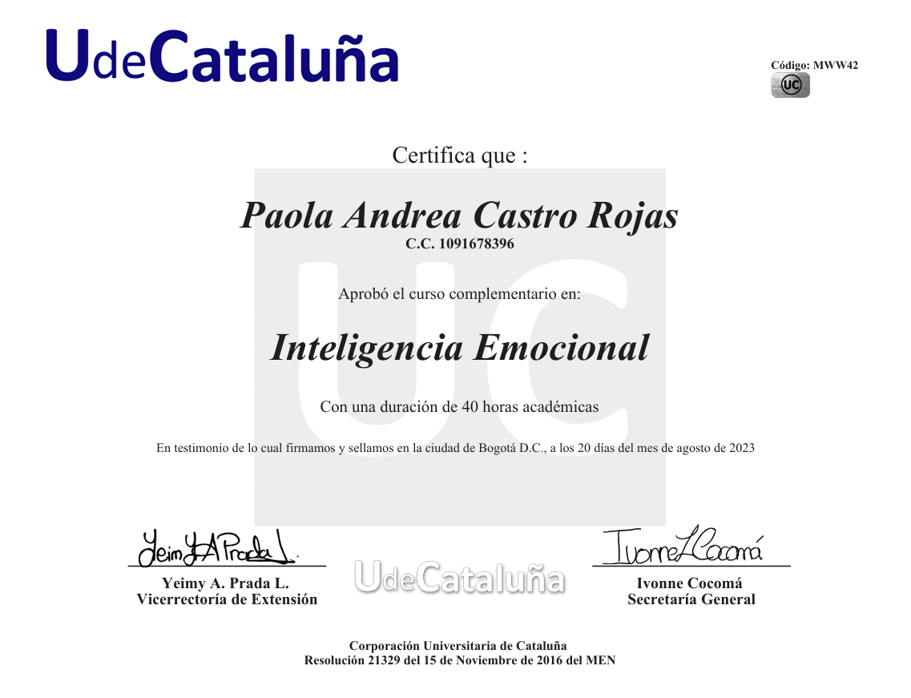
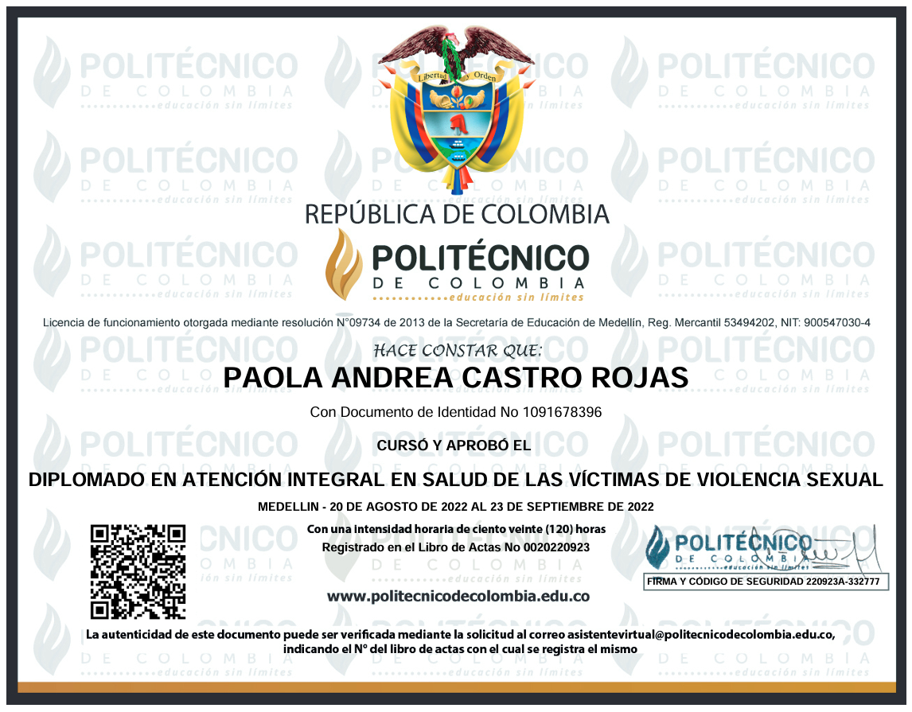
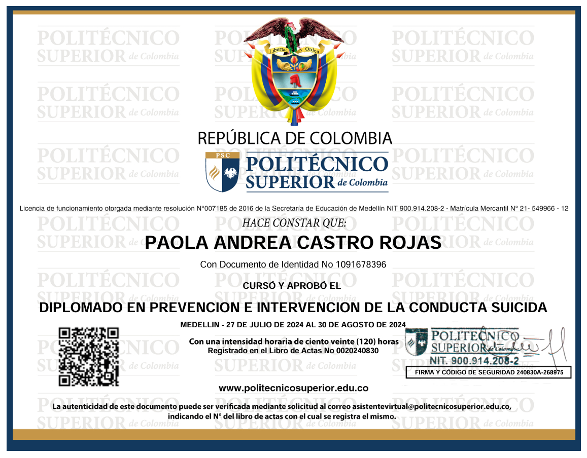
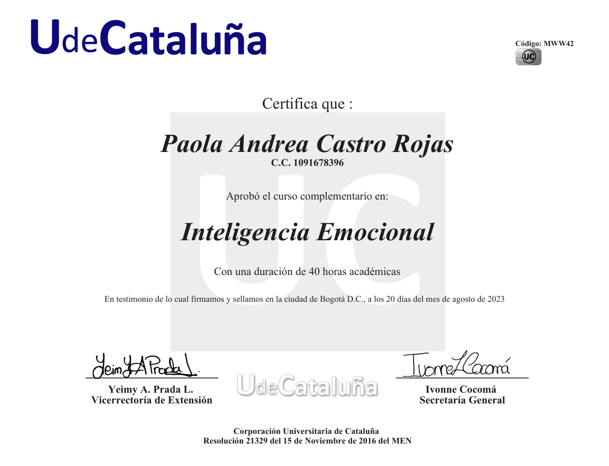
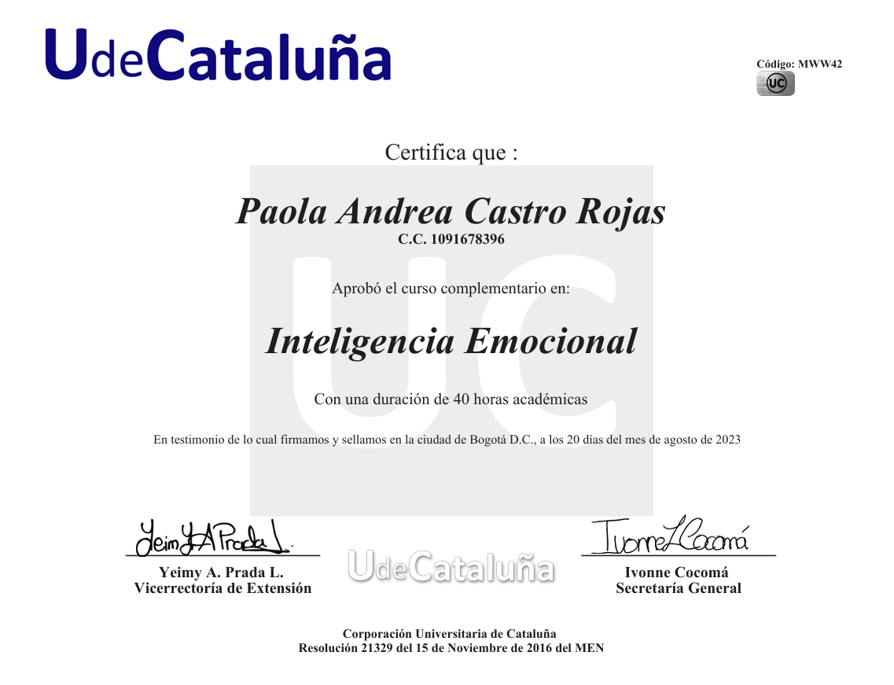
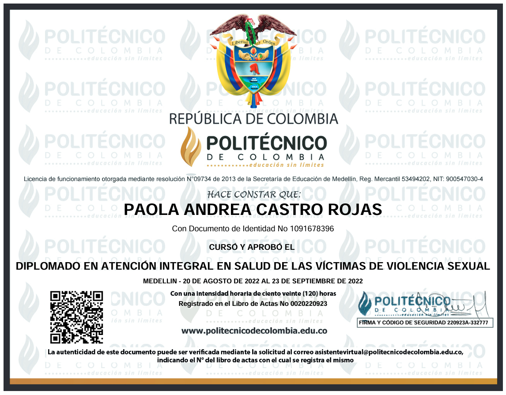
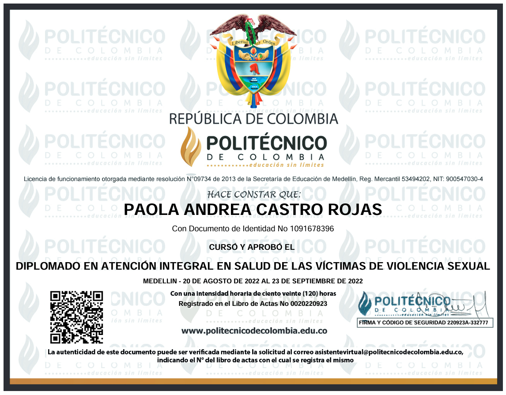
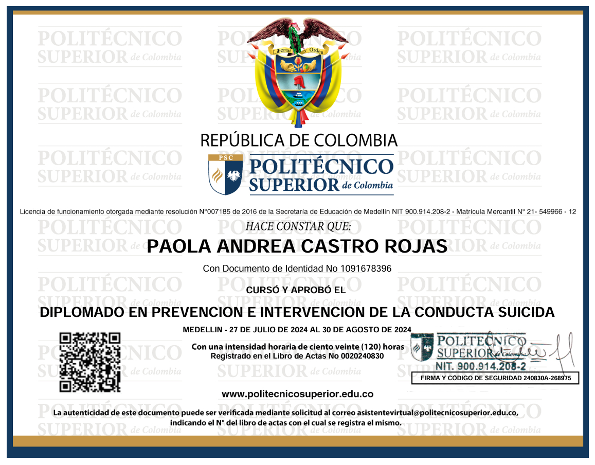
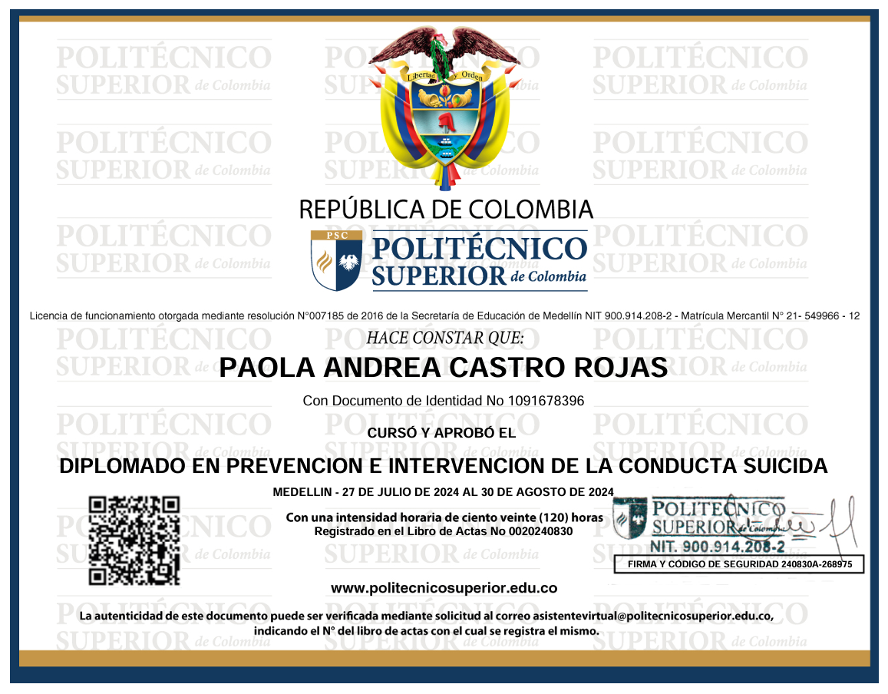

Ofrezco atención médica personalizada con un enfoque humano y profesional. Soy una profesional caracterizada por su empatía y buen servicio, además cuanto con estudios en salud mental. Agenda tu cita conmigo fácilmente en línea.
Sobre mí
Soy médica general con más de 5 años de experiencia, magister en psiquiatría forenes y con múltiples diplomados y estudios en patologías mentales. Comprometida con la salud y el bienestar de mis pacientes.



Servicios
CONSULTA MÉDICA BILINGÜE
Comprehensive medical appointment.
70.oo dólares.
CONSULTA DE PRIMERA VEZ ON LINE - Medicina General
Evaluación médica on line completa de primera vez, con actualización de estado médico y antecedentes, diagnóstico inicial, tratamiento y recomendaciones.
$100.000.oo pesos.
CONSULTA DE CONTROL - Medicina general
Consulta de control posterior a cita inicial de primera vez, para realizar evolución de síntomas, revisión de exámenes solicitados, actualización dianóstica y modificación de tratamiento.
$70.000.oo esos.
EXPEDICIÓN DE CERTIFICADOS MÉDICOS
Certificado escolar.
Certificado de salud adultos y niños.
Certificado de capacidad mental.
Certificado de antecedentes médicos.
Certificado de borramiento de huellas dactilares.
$50.000.oo pesos
CONSULTA MÉDICA CON ENFOQUE EN SALUD MENTAL
Evaluación médica y mental on line completa, con actualización de estado médico y antecedentes, diagnóstico inicial, tratamiento y recomendaciones
$120.000.oo pesos
 


 


 
